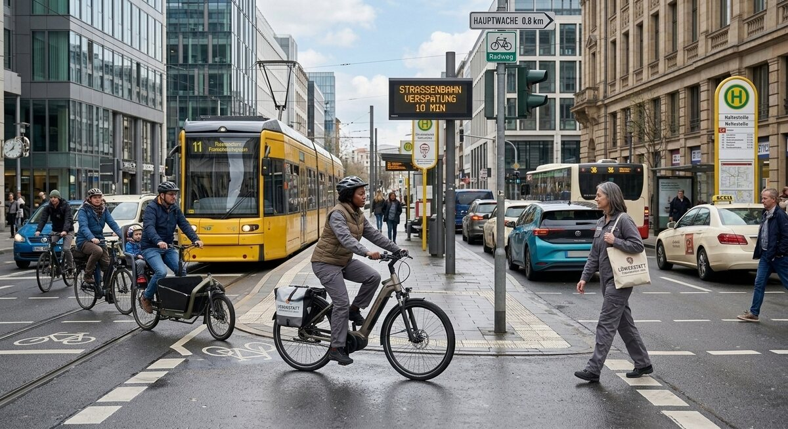

Teil 2 · Bild und Erfahrung
Karte 024
Fahrrad und Autoverkehr in der Stadt
Ausführliches Übungsmaterial zur Vorder- und Rückseite der Karte.

Ihre Aufgabe
- was Sie auf dem Bild sehen
- wie die Verkehrssituation wirkt
- welche Probleme es geben könnte
- wie Sie selbst unterwegs sind
- was im Stadtverkehr besser sein könnte
Interaktives Sprechtraining
Mit ChatGPT sprechen üben
Kopiere zuerst die Übungsanweisung. Öffne anschließend die ChatGPT-App oder ChatGPT im Browser, starte den Sprachmodus (Voice Mode) und füge den Prompt in diesen Chat ein.
- Tippe auf „Prompt kopieren“.
- Öffne anschließend die ChatGPT-App oder nutze den Browser-Link.
- Melde dich bei Bedarf an und starte in ChatGPT zuerst den Sprachmodus (Voice Mode).
- Füge den bereits kopierten Prompt in den Chat des Sprachmodus (Voice Mode) ein und sende ihn ab.
- Beginne anschließend die Sprechübung.
- Wenn du die Übung beenden und Feedback bekommen möchtest, sage:
Die Übung ist beendet. Bitte gib mir jetzt Feedback.
Prompt anzeigen oder manuell kopieren
ChatGPT ist ein externer Dienst. Für den Sprachmodus (Voice Mode) musst du dich möglicherweise bei deinem ChatGPT-Konto anmelden und den Zugriff auf das Mikrofon erlauben. Verfügbare Funktionen hängen von deinem Gerät und Konto ab. Die Übung ersetzt keine offizielle Prüfungsbewertung.
Nützliche Satzanfänge
- Auf der Straße sieht man …
- Die Situation wirkt auf mich …
- Ein Problem könnte sein, dass …
- Ich selbst fahre oft mit …
- Besser wäre es, wenn …
Modellantwort anhören
Höre zuerst aufmerksam zu. Sprich danach nicht einfach alles nach, sondern bearbeite die Aufgabe mit eigenen Informationen.
Modellantwort
Auf dem Bild sieht man wahrscheinlich eine Straße in der Stadt. Dort fahren Autos, und man sieht vielleicht auch Radfahrer oder Fußgänger. Die Situation wirkt ein bisschen voll, aber nicht chaotisch. Ich glaube trotzdem, dass man im Stadtverkehr immer aufmerksam sein muss, weil viele Menschen gleichzeitig unterwegs sind und nicht alle gleich schnell fahren oder reagieren.
Ein Problem könnte sein, dass Radfahrer und Autos nicht immer genug Platz haben. Dann fühlen sich manche Menschen unsicher, besonders Kinder oder ältere Personen. Ich selbst bin oft mit Bus und Bahn unterwegs, manchmal aber auch mit dem Fahrrad. Das Fahrrad ist praktisch für kurze Wege, aber man braucht sichere Wege und Rücksicht von allen. Meiner Meinung nach wäre es besser, wenn es mehr gute Radwege gäbe und wenn alle ruhiger fahren würden. Dann wäre der Verkehr für alle entspannter und sicherer.
Mögliche Prüferfragen und Antwortideen
-
Fahren Sie gern Fahrrad?
Antwortidee: Ja, für kurze Strecken fahre ich gern Fahrrad.
-
Ist Verkehr in der Stadt stressig?
Antwortidee: Manchmal ja, besonders zu Stoßzeiten.
-
Was brauchen Radfahrer besonders?
Antwortidee: Sie brauchen sichere Wege und Rücksicht von Autofahrern.
-
Sollten mehr Menschen ohne Auto fahren?
Antwortidee: Ja, wenn der öffentliche Verkehr gut funktioniert, ist das sinnvoll.
Wortschatz
| Deutsch | Englisch |
|---|---|
| der Stadtverkehr | city traffic |
| aufmerksam | attentive |
| der Radweg | bike lane |
| Rücksicht | consideration |
| unsicher | unsafe / insecure |
| die Stoßzeit | rush hour |
| der Fußgänger | pedestrian |
| sicher | safe |
Schnelltraining
Nennen Sie zwei Probleme im Verkehr. Danach sagen Sie einen Satz mit „Meiner Meinung nach sollte …“.